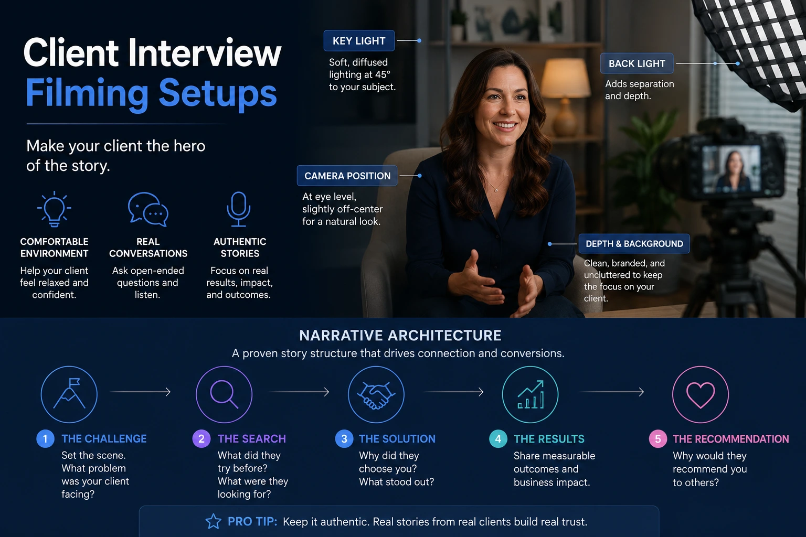
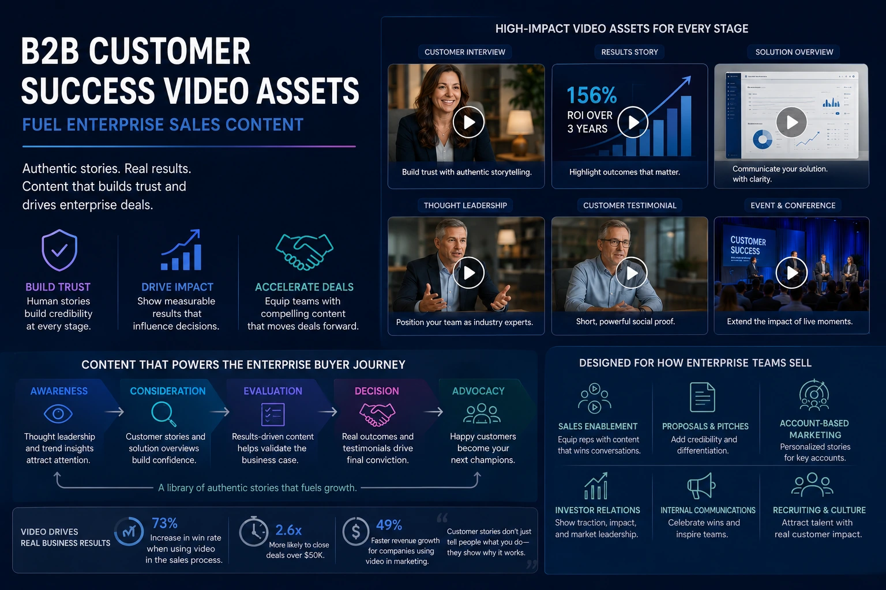

Moving Past Boring PDFs: Turning Customer Success Stories into High-Conversion Video Case Studies
The PDF Case Study Has Stopped Working
Every B2B company has them: a folder of written case studies, carefully formatted in brand colours, populated with client logos, organised by industry vertical, and almost never read past the second paragraph by the enterprise prospects they were built to persuade. The written PDF case study was the standard format for corporate proof-of-work documentation for decades — and it has not kept pace with how B2B buyers now evaluate vendors, validate claims, and build internal consensus around purchasing decisions.
The enterprise buyer in 2026 does not have the attention, the trust, or the incentive to read a vendor-authored document about a vendor-selected client outcome. They have colleagues who have been burned by overpromised case studies before. They have procurement processes that require evidence beyond a formatted PDF. And they have access, for the first time in buying history, to a video format that delivers the same peer validation that a reference call provides — at scale, on demand, without requiring either party to schedule a conversation.
Video case study production is the discipline that closes the gap between what written case studies claim and what enterprise buyers actually need to see: a real client, in their real environment, speaking in their own words about a specific problem they had and the specific, measurable outcome they achieved. B2B customer success video assets built to this standard are not marketing materials — they are high-converting enterprise sales content that functions as a scalable reference call, a procurement-grade evidence document, and a social proof asset simultaneously.
This guide covers the production disciplines, narrative frameworks, filming setups, and deployment strategies that transform customer success stories from forgotten PDFs into business validation video assets that actively close deals.
Why Video Case Studies Outperform Written Case Studies in Enterprise Sales
The commercial argument for video case study production over written case studies is not a question of format preference — it is a question of how enterprise buying decisions are actually made and what kinds of evidence move them forward.
Enterprise purchasing decisions involve multiple stakeholders: a commercial champion who wants to buy, a technical evaluator who needs to verify, a financial decision-maker who needs to justify cost, and a risk-averse procurement function that needs documented evidence of prior delivery. A written PDF case study, authored by the vendor, serves the commercial champion at best. A professionally produced corporate testimonial video — with a named client, a specific outcome stated in measurable terms, and a filmed environment that grounds the claim in operational reality — provides evidence that speaks to every stakeholder in the buying group simultaneously.
The specific advantages that make B2B customer success video assets more effective than written alternatives at every stage of the enterprise sales funnel:
- Credibility through physicality. When a client speaks on camera from their own office or production floor, the background environment, the production context, and the client's own professional demeanour provide implicit verification that no written document can replicate. The viewer does not need to assess whether the claim is credible — the filmed reality of the client's environment provides that assessment automatically and immediately.
- Emotional persuasion alongside rational evidence. Written case studies communicate facts. Video communicates facts and the emotional experience of the client who lived through them — the relief of a problem solved, the confidence of a result delivered, the enthusiasm of a client who would make the same decision again. Enterprise buyers are human beings making decisions under professional pressure; both the rational evidence and the emotional signal matter to how those decisions are made.
- Shareability within the buying group. A prospect who is persuaded by a written case study must re-summarise its contents to their colleagues. A prospect who is persuaded by a video shares the link — and every stakeholder who watches it receives the same peer validation directly, without the attenuation of a second-hand summary. High-converting enterprise sales content in video format travels through buying organisations in ways that PDFs reliably do not.
- Deployment across the full sales cycle. A two to three minute video case study edited into multiple cuts — a full version for the sales deck presentation, a 60-second version for follow-up email sequences, a 30-second version for LinkedIn and digital retargeting — becomes a single production investment that works across every touchpoint in a six to eighteen month enterprise sales cycle, maintaining consistent social proof at every stage.
The Narrative Architecture of a High-Converting Video Case Study
The most common failure in video case study production is not a filming failure — it is a narrative failure. A video that captures a client saying positive things about a vendor, without a structured narrative that moves from specific problem through specific solution to specific measurable outcome, is not a case study. It is a testimonial — and testimonials, however warm, do not provide the procurement-grade evidence that closes enterprise deals.
A high-converting enterprise sales content video case study follows a three-act narrative structure that mirrors the buying decision the prospect is themselves facing:
- Act One — The Problem Before. The client describes, in specific and credible operational terms, the challenge, inefficiency, risk, or cost that existed before they engaged the vendor. This act is the most important section of the video for enterprise buyers — because it is the section in which the prospect recognises themselves. A client describing a problem that the prospect is currently living through creates immediate, visceral relevance that no vendor-authored description of that problem can produce. The interview questions that unlock Act One ask not "what did you need?" but "what was going wrong, and what was the business cost of it going wrong?"
- Act Two — The Decision and the Process. The client describes why they chose this vendor over alternatives — the specific criteria they applied, the doubts they had, and what resolved those doubts. This act serves the prospect who is currently in the vendor evaluation stage: it provides a peer account of the due diligence process and its conclusion, which is more persuasive than any vendor-authored comparison of competitors. The interview questions that unlock Act Two ask not "why did you choose us?" but "what were you evaluating, what concerned you, and what gave you confidence to proceed?"
- Act Three — The Outcome After. The client states the result in measurable, specific terms — not "things improved significantly" but "we reduced our production turnaround by 40 percent" or "the campaign generated 3.2x the qualified leads our previous approach produced in the same period." Specificity is the single most important quality of this act: vague positive outcomes are discounted by procurement evaluators as unverifiable; specific numerical outcomes are treated as documented evidence. The interview questions that unlock Act Three ask not "how did it go?" but "what did you measure, what changed in those numbers, and what is the business impact of that change?"

Client Interview Filming Setups: The Production Decisions That Determine Perceived Credibility
The quality of a corporate testimonial video is not determined by the quality of the client's words alone — it is determined equally by the production quality of the environment in which those words are captured. A client making a credible, specific, measurable claim about a vendor's impact, filmed on a phone in a noisy open-plan office with flat overhead lighting, communicates a very different level of organisational seriousness than the same client filmed with professional client interview filming setups in a composed, branded environment with clean audio and considered lighting.
For enterprise B2B buyers, the production quality of a business validation video asset is itself a signal: it communicates how seriously the vendor takes the relationship with the client being featured, how professionally the vendor operates, and how confident the vendor is in its own delivery. The investment in professional client interview filming setups is therefore not merely an aesthetic decision — it is a credibility decision.
The key production decisions in a professional client interview filming setup:
Location and Background Selection
The filming location within the client's environment should communicate their organisation's context and scale without overwhelming or distracting from the interview subject. A boardroom with visible branding, a production floor with operational activity, or a clean office environment with the client's logo subtly present all provide contextual grounding. The background should be composed — not a blank wall, which reads as low budget, and not a chaotic open office, which reads as uncontrolled. Depth of field management using the appropriate lens focal length separates the subject cleanly from a background that is present but not dominant.
Lighting for Interview Credibility
A three-point lighting setup — key light, fill light, and back light — is the standard for professional interview filming and for good reason: it gives the subject dimensional presence, separates them cleanly from the background, and eliminates the flat, shadowed appearance that single-source or overhead lighting produces. The key light quality — soft and flattering for senior executives, slightly more defined for technical or operational roles — should match the tone of the case study content. Consistent lighting quality across multiple client interviews in a campaign ensures the finished assets feel like a coherent series rather than a collection of individually produced pieces.
Audio Capture and Environment Control
Audio quality is the most common production failure in client review video production and the failure that most directly undermines the credibility of the finished piece. A lapel microphone placed correctly on the interview subject, combined with an ambient sound check and, where necessary, acoustic treatment of a reverberant space, produces clean, professional audio that keeps the viewer's attention on the content. HVAC noise, open-plan office ambient sound, and corridor traffic are all manageable pre-shoot — they are significantly harder to remove in post-production and impossible to remove completely. Audio environment control is a pre-shoot production responsibility, not a post-production one.
Multi-Camera Setup for Editorial Flexibility
A two-camera setup for the interview — a primary camera on the subject and a secondary camera at a slightly different angle and focal length — provides the editor with cutting options that a single-camera interview does not. When a client self-corrects, takes a long pause, or delivers the same point across multiple takes, a two-camera setup allows the edit to cut between angles invisibly, selecting the best version of each section of the interview without the jump cuts that a single-camera edit of the same material would require. For corporate proof-of-work documentation where the client's delivery needs to be precise and specific, the editorial flexibility of a two-camera setup directly improves the quality of the finished film.
B-Roll and Environment Capture: Making the Claim Visible
The interview is the evidence. The b-roll is the proof that the evidence is real. In video case study production, b-roll capture within the client's environment serves a function that goes beyond visual variety — it grounds every claim the interview subject makes in visible, operational reality that the viewer can see and assess independently of the spoken words.
A client who says "our logistics operation is now significantly faster" is making a claim. A client who says the same thing while the edit cuts to footage of their warehouse operation, their team at work, and their fulfilment process in motion is making a claim that the viewer can partially verify through their own visual assessment. This is the difference between a testimonial and corporate proof-of-work documentation — and b-roll capture is what creates it.
The b-roll sequences that most directly strengthen a B2B customer success video asset:
- The client's operational environment. Wide establishing shots of the client's facility, office, production floor, or service environment that communicate the scale and nature of their organisation. These shots tell the viewer who this client is before a word is spoken — providing the context that makes the interview's specific claims legible and credible.
- The work in progress. Close and medium shots of the client's team engaged in the specific activity that the case study's claimed outcome relates to — using the vendor's software, operating the vendor's equipment, running the vendor's campaign process. These shots are the visual equivalent of a site visit: they show that the relationship is real and operational, not theoretical.
- The client's product or service output. Where the case study outcome relates to a tangible product or service quality improvement, footage of that product or service — on the production line, in the delivery vehicle, in the hands of the end customer — provides the most direct visual validation of the claimed result.
- The client's people. Candid footage of the client's team — in meetings, at workstations, in corridors — humanises the organisation and makes the case study feel like a documentary about a real business rather than a staged marketing production. The viewer identifies with the people, not just the outcome, and that identification is what makes the social proof transfer to their own situation.
Testimonial Commercial Shoots: Planning for Multiple Assets from a Single Production Day
The most significant efficiency opportunity in testimonial commercial shoots is the production of multiple B2B customer success video assets from a single client filming day — capturing not just the full case study interview and b-roll, but also the shorter-format assets and standalone quote clips that will be deployed independently across sales and marketing channels throughout the year.
A client who has agreed to a half-day filming commitment has, in practical terms, agreed to provide the raw material for an entire library of business validation video assets — if the production has been planned to capture that library rather than just a single interview. The pre-production investment in planning this capture determines whether the client filming day delivers one asset or ten.
The asset library a single well-planned testimonial commercial shoot can produce:
- The full case study film (2–3 minutes). The complete three-act narrative: problem, solution, outcome. Used in sales deck presentations, on the website case studies section, and shared by the sales team with active prospects at the consideration stage.
- The sales follow-up cut (60–90 seconds). A compressed version of the case study focused on the outcome — the measurable result stated clearly and quickly — for deployment in post-meeting follow-up emails and LinkedIn outreach sequences where attention is limited and the full film is too long.
- The social proof clip (20–30 seconds). A single powerful statement from the interview — the most credible, specific, and quotable moment — edited as a standalone clip for LinkedIn posts, website homepage social proof sections, and digital advertising retargeting campaigns targeting prospects who have already visited the website.
- The pull quote graphic series. Key statements from the interview transcript, formatted as branded static graphic assets for social media posting — a deliverable that requires only the transcript and the brand design template, but extends the reach of the filmed content to audiences who engage with static content more readily than video.
- The client's own copy. A version of the full film delivered to the client for their own internal communications, website, and social media use — fulfilling the participation incentive discussed in pre-production and extending the video's reach across the client's own audience and network.

Deploying Business Validation Video Assets Across the Enterprise Sales Funnel
A business validation video asset that is produced but not strategically deployed is a production cost that does not return its investment. The deployment strategy for high-converting enterprise sales content needs to match the right asset to the right stage of the buying process — because what persuades a prospect at awareness stage is different from what closes a deal at the decision stage.
The deployment map for a complete video case study asset library across the enterprise sales funnel:
- Awareness stage — LinkedIn and digital advertising. The 20 to 30-second social proof clip and the pull quote graphic series deployed in LinkedIn organic posts and paid retargeting campaigns targeting the prospect's industry vertical, company size, and job function. At this stage, the goal is not to sell — it is to establish the vendor as a credible operator with documented client outcomes, before a sales conversation has begun.
- Consideration stage — website and sales outreach. The full two to three minute case study film embedded on the website case studies page, segmented by industry and use case so that a prospect from a specific vertical is served the most relevant peer example. Shared by the sales team via email in the early stages of an active sales conversation, positioned as "here is what we achieved for a similar organisation" rather than "here is our marketing content."
- Evaluation stage — sales deck and proposal support. The 60 to 90-second outcome-focused cut embedded within the sales deck presentation, played at the point in the meeting where the vendor's claimed ROI is being discussed. A client stating a specific 40 percent efficiency improvement on video, at the moment the prospect is evaluating whether that improvement is credible, is more persuasive than any slide the sales team can build.
- Decision stage — procurement and stakeholder distribution. The full case study film shared with procurement evaluators and additional stakeholders who were not present in the original sales conversations, packaged alongside the written proposal as documented evidence of prior delivery. At this stage, the video functions as a scalable reference call — providing the peer validation that procurement requires without the logistical overhead of arranging live reference conversations.
Corporate Proof-of-Work Documentation: The Standard That Enterprise Buyers Actually Require
Corporate proof-of-work documentation is the video format that moves past sentiment and into evidence. It is what separates a corporate testimonial video — which captures positive client opinion — from a business validation video asset — which captures documented client outcome. The distinction is not semantic: it is the difference between content that a commercial champion shares with their team and content that survives procurement scrutiny.
The production elements that elevate a testimonial into corporate proof-of-work documentation:
- Named client, named role, named organisation. Anonymous testimonials are discounted by enterprise buyers as unverifiable. A named client speaking from an identified organisation, in a role that is relevant to the prospect's own decision-maker, provides the attribution that makes the claim checkable — and checkable claims are trusted claims.
- Specific metrics, not directional language. "Significantly improved" is directional language. "Reduced our client onboarding time from 14 days to 6 days" is a metric. Every outcome claim in a corporate proof-of-work documentation video needs to be expressed in specific, measurable terms — ideally with the client stating the baseline figure and the post-engagement figure explicitly, so the improvement is unambiguous.
- The operational context that makes the metric credible. A metric stated without context can be dismissed as cherry-picked or anomalous. A metric stated alongside b-roll footage of the operational environment in which it was achieved, and alongside the client's description of the conditions that made the improvement difficult and therefore significant, is a metric that carries evidentiary weight.
- The client's forward endorsement. The most powerful closing statement in any B2B customer success video asset is not a summary of past outcome but a forward commitment: "We are continuing to expand the programme" or "We would make the same decision again without hesitation." A client who describes a past outcome provides historical evidence. A client who describes their current and future commitment to the vendor provides the strongest available signal that the outcome was real, sustainable, and commercially significant.
Conclusion
The PDF case study served its purpose in a buying environment where written documents were the primary medium for vendor evaluation. That environment has changed. Enterprise buyers now expect the same standard of evidence from vendor-provided social proof that they receive from peer review platforms, reference calls, and industry analyst reports — and the video format is the only medium through which a vendor can deliver that standard at scale, on demand, and across an entire buying group simultaneously.
Video case study production — built on professional client interview filming setups, structured narrative architecture, purposeful b-roll capture, and multi-asset delivery planning — is the production discipline that transforms customer success stories from archived PDFs into high-converting enterprise sales content that works at every stage of the buying cycle.
The investment is made once, in a single well-planned testimonial commercial shoot. The return is measured across every deal it touches, every stakeholder it persuades, and every sales conversation it shortens — because the client on screen has already made the case that the sales team would otherwise have to make themselves, with the credibility that only a peer can provide.
At The PhD Ads, we produce B2B customer success video assets and corporate testimonial videos for organisations across India — from pre-production narrative development and client interview filming setups through multi-format post-production delivery — because we understand that the most persuasive salesperson in any enterprise deal is the client who has already said yes.
Key Topics
Ready to Turn Your Best Client Outcomes Into Sales Assets That Close Deals?
At The PhD Ads, we produce professional video case studies and corporate testimonial videos for B2B organisations across India — from narrative development and client interview filming to multi-format delivery across your entire sales funnel.
Email: team@e2o.in